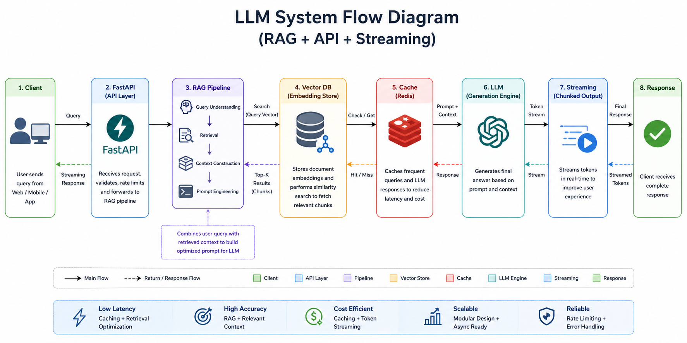

Build a Production System using RAG + API + Streaming
In this project, we build a complete production-grade LLM system that simulates real-world AI applications such as ChatGPT, enterprise copilots, and knowledge assistants. Unlike simple prototypes, this system integrates multiple layers including retrieval pipelines, caching, API services, and streaming responses. The goal is to design a system that is not only accurate but also scalable, efficient, and cost-optimized. By combining Retrieval-Augmented Generation (RAG) with LLMs, we ensure that responses are grounded in real data instead of relying purely on pre-trained knowledge. This project helps you understand how modern AI systems are engineered and deployed in production environments.

We organize the system into modular components. This separation ensures maintainability, scalability, and easier debugging.
project/ │── app.py # API Layer │── rag.py # Pipeline Logic │── embeddings.py # Embedding Model │── vector_db.py # Retrieval Engine │── cache.py # Caching Layer │── config.py # Configuration
We convert text into vector embeddings so that machines can understand semantic similarity instead of exact keyword matching.
from sentence_transformers import SentenceTransformer
model = SentenceTransformer('all-MiniLM-L6-v2')
def embed(text):
return model.encode([text])
We store embeddings in a vector database and perform similarity search to find relevant documents.
import faiss
import numpy as np
index = faiss.IndexFlatL2(384)
def add_vectors(vectors):
index.add(np.array(vectors))
def search(query_vec):
return index.search(query_vec, k=2)
We retrieve the most relevant documents based on user query.
documents = ["AI is intelligence", "ML is subset of AI"]
def retrieve(query):
q_vec = embed(query)
_, I = search(q_vec)
return [documents[i] for i in I[0]]
We store previously generated responses to avoid recomputation.
cache = {}
def get_cache(q):
return cache.get(q)
def set_cache(q, res):
cache[q] = res
We generate the final response using the LLM based on retrieved context.
from transformers import pipeline
generator = pipeline("text-generation", model="gpt2")
def generate(query, context):
prompt = query + " " + " ".join(context)
return generator(prompt, max_length=50)[0]['generated_text']
We integrate retrieval, generation, and caching into a unified pipeline.
def rag(query):
cached = get_cache(query)
if cached:
return cached
context = retrieve(query)
response = generate(query, context)
set_cache(query, response)
return response
We expose the system as an API so it can be accessed by applications.
from fastapi import FastAPI
app = FastAPI()
@app.get("/query")
def query(q: str):
return {"response": rag(q)}
We stream responses token-by-token for better user experience.
def stream(text):
for word in text.split():
yield word + " "
We use asynchronous execution to improve performance and handle multiple requests.
import asyncio
async def async_retrieve(q):
return retrieve(q)
async def pipeline(q):
context = await async_retrieve(q)
return generate(q, context)